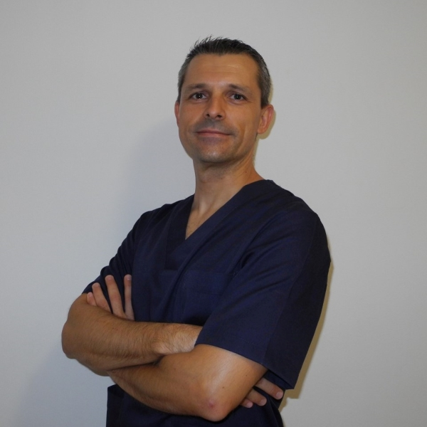

Sesiones personalizadas desde la primera consulta
Profesionales con más de 20 años de experiencia
Ubicación Chamartín - bien comunicado en transporte público y vehiculo privado
SOBRE NOSOTROS - TU CENTRO DE FISIOTERAPIA EN CHAMARTÍN
Somos un centro de Fisioterapia compuesta por 2 fisioterapeutas, que ofrecemos una amplia gama de servicios, y contamos con más de 20 años de experiencia profesional.
Realizamos principalmente tratamiento manuales, siendo los más eficientes y efectivos, así como recomendamos complementar con ejercicios terapeúticos. Los servicios que ofrecemos van dirigidos a todos los grupos de edad, y distintas patologías.
Traumatológica, Deportiva
Neurológicas
Geriátrica
Reeducación postural
TRATAMIENTOS
Ofrecemos tratamientos personalizados tanto en la consulta como a domicilio (consultar zonas).
Rehabilitación post-quirúrgica
La fisioterapia post-quirúrgica es una parte fundamental del proceso de recuperación después de una cirugía. A través de una evaluación individualizada y la aplicación de diversas técnicas y ejercicios, ayuda a controlar el dolor y la inflamación, restaurar la fuerza y la movilidad, prevenir complicaciones y facilitar el retorno a las actividades de la vida diaria. Es como tener un entrenador personal especializado en ayudarte a recuperar tu cuerpo después del "esfuerzo" de la cirugía, asegurándose de que te recuperes de la mejor manera posible.
Tras pasar por una cirugía, aunque la operación haya sido exitosa, tu cuerpo necesita ayuda para recuperarse completamente y volver a funcionar de manera óptima. La fisioterapia post-quirúrgica es un conjunto de tratamientos y ejercicios diseñados específicamente para ayudar a tu cuerpo a sanar y recuperar la función después de una intervención quirúrgica.
¿Por qué es importante la fisioterapia después de una cirugía?
La cirugía, aunque necesaria, puede generar diversos efectos en el cuerpo:
- Dolor e inflamación: La incisión y la manipulación de los tejidos provocan dolor e hinchazón.
- Debilidad muscular: La inmovilización o la falta de uso de ciertos músculos durante y después de la cirugía puede causar debilidad.
- Pérdida de movilidad: La cicatrización, el dolor y la inflamación pueden limitar el rango de movimiento de las articulaciones cercanas a la zona operada.
- Adherencias y cicatrices: Se pueden formar tejidos cicatriciales internos (adherencias) y externos que restringen el movimiento y causan dolor.
- Alteración de la postura y el equilibrio: El dolor y la limitación de movimiento pueden llevar a adoptar posturas compensatorias que generan otros problemas.
- Riesgo de complicaciones: La inmovilización prolongada puede aumentar el riesgo de trombosis venosa profunda (TVP) o problemas respiratorios.
¿En qué consiste la fisioterapia post-quirúrgica?
Un programa de fisioterapia post-quirúrgica se adapta a la cirugía específica y a las necesidades individuales de cada paciente, pero generalmente incluye:
- Evaluación: El fisioterapeuta evalúa tu dolor, inflamación, rango de movimiento, fuerza muscular, postura, cicatriz y cualquier otra limitación funcional.
- Control del dolor y la inflamación: Se utilizan técnicas como la aplicación de frío o calor, electroterapia (TENS), drenaje linfático manual y movilización suave para reducir el dolor y la hinchazón.
- Ejercicios terapéuticos: Se prescriben ejercicios específicos y progresivos para restaurar la fuerza muscular, mejorar el rango de movimiento, recuperar la coordinación y el equilibrio. Estos ejercicios pueden comenzar siendo muy suaves y aumentar gradualmente en intensidad.
- Movilización de tejidos blandos y cicatrices: Se aplican técnicas manuales para liberar adherencias, mejorar la movilidad de la cicatriz y prevenir la formación de tejido cicatricial restrictivo.
- Reeducación de la marcha y la postura: Si la cirugía ha afectado la forma de caminar o la postura, el fisioterapeuta te guiará para recuperar patrones de movimiento correctos.
- Educación y consejos: Se te proporcionará información sobre cómo manejar el dolor en casa, qué actividades son seguras y cómo prevenir complicaciones.
- Entrenamiento funcional: A medida que avanzas en tu recuperación, se incorporan ejercicios que simulan las actividades de la vida diaria para ayudarte a volver a tus rutinas.
¿Qué se siente durante las sesiones?
Las sensaciones durante las sesiones de fisioterapia post-quirúrgica pueden variar:
- Alivio del dolor: Muchas técnicas buscan reducir el dolor y la inflamación, por lo que puedes sentirte más cómodo después de la sesión.
- Estiramiento y movilización: Puedes sentir cómo se estiran suavemente los tejidos y cómo se movilizan las articulaciones, lo que puede generar una sensación de liberación.
- Trabajo muscular: Los ejercicios pueden generar algo de fatiga muscular al principio, pero esto es parte del proceso de fortalecimiento.
- Puede haber incomodidad: Algunas técnicas, como la movilización de cicatrices, pueden ser ligeramente incómodas al principio, pero son importantes para prevenir problemas a largo plazo.
¿Cuándo se empieza la fisioterapia post-quirúrgica?
El momento para comenzar la fisioterapia post-quirúrgica depende del tipo de cirugía y de las indicaciones del cirujano. En algunos casos, se inicia unos días después de la operación, incluso durante la hospitalización. En otros casos, puede comenzar unas semanas después.

Traumatología
Recuperación de todo tipo de patologías, independientemente del origen, incluyendo los accidentes de tráfico y las lesiones laborales o posturales como las afecciones de la columna vertebral (Hernias discales, lumbalgias, cervicalgias,etc.) y lesiones degenerativas (artrosis, artritis, reumatismos, etc.).
Recuperación de todo tipo de patologías, independientemente del origen, incluyendo los accidentes de tráfico y las lesiones laborales o posturales como las afecciones de la columna vertebral (Hernias discales, lumbalgias, cervicalgias,etc.) y lesiones degenerativas (artrosis, artritis, reumatismos, etc.).

Fisioterapia Deportiva
La fisioterapia deportiva es un aliado fundamental para cualquier persona activa, desde el deportista de élite hasta el aficionado. A través de la prevención, el diagnóstico preciso, el tratamiento específico y la rehabilitación individualizada, busca ayudar a superar las lesiones relacionadas con la actividad física, optimizar el rendimiento y permitir un retorno seguro y efectivo al deporte. Es como tener un entrenador y un sanador especializado en las necesidades del cuerpo activo, asegurándose de que puedas disfrutar del deporte al máximo y durante mucho tiempo.
¿A quién va dirigida la fisioterapia deportiva?
La fisioterapia deportiva no solo está dirigida a atletas de alto rendimiento, sino a cualquier persona que practique deporte o actividad física de forma regular, incluyendo:
- Deportistas profesionales y amateurs de todas las disciplinas.
- Personas que realizan ejercicio por salud y bienestar.
- Niños y adolescentes que practican deportes.
- Adultos mayores activos.
¿Cuáles son los objetivos de la fisioterapia deportiva?
Los principales objetivos de la fisioterapia deportiva son:
- Prevención de lesiones: Identificar factores de riesgo, mejorar la técnica deportiva, fortalecer músculos específicos y diseñar programas de calentamiento y enfriamiento adecuados para evitar lesiones.
- Diagnóstico preciso de lesiones: Evaluar la naturaleza y la gravedad de las lesiones musculoesqueléticas relacionadas con el deporte.
- Tratamiento de lesiones: Utilizar una variedad de técnicas para aliviar el dolor, reducir la inflamación, promover la curación de los tejidos lesionados y restaurar la función.
- Rehabilitación y readaptación deportiva: Diseñar programas de ejercicios progresivos para recuperar la fuerza, la potencia, la resistencia, la flexibilidad, el equilibrio, la agilidad y las habilidades específicas del deporte.
- Optimización del rendimiento: Ayudar a los atletas a mejorar su biomecánica, su eficiencia de movimiento y su capacidad física para alcanzar su máximo potencial.
- Educación: Proporcionar información sobre el manejo de la carga de entrenamiento, la prevención de recaídas y el cuidado del cuerpo para mantener una vida deportiva activa y saludable.
- Vuelta segura al deporte: Guiar al deportista a través de un proceso gradual y seguro para regresar a la actividad deportiva sin riesgo de re-lesión.
¿En qué consiste el tratamiento de fisioterapia deportiva?
El tratamiento en fisioterapia deportiva es integral y puede incluir:
- Evaluación biomecánica: Análisis del movimiento para identificar patrones incorrectos que puedan contribuir a lesiones o limitar el rendimiento.
- Terapia manual: Técnicas como masajes, movilizaciones articulares, estiramientos y liberación miofascial para aliviar el dolor, reducir la tensión muscular y mejorar la movilidad.
- Ejercicio terapéutico: Programas de ejercicios específicos para fortalecer músculos debilitados, mejorar la estabilidad, aumentar la flexibilidad y recuperar la función.
- Vendaje neuromuscular (kinesiotaping) y funcional: Aplicación de vendajes especiales para dar soporte, reducir el dolor, mejorar la circulación o facilitar la activación muscular.
- Electroterapia: Uso de corrientes eléctricas (TENS, electroestimulación) para aliviar el dolor, reducir la inflamación o estimular la contracción muscular.
- Termoterapia y crioterapia: Aplicación de calor o frío para controlar el dolor y la inflamación.
- Readaptación deportiva: Ejercicios específicos del deporte que se realizan de forma progresiva para simular los movimientos y las demandas de la actividad, preparando al deportista para la vuelta a la competición o a su nivel de actividad previo.
- Entrenamiento propioceptivo: Ejercicios para mejorar la conciencia de la posición del cuerpo en el espacio y la capacidad de reaccionar ante desequilibrios, previniendo esguinces y otras lesiones.
- Asesoramiento y educación: Información sobre el manejo de la lesión, el plan de recuperación, la prevención de futuras lesiones y la optimización del entrenamiento.
¿Qué se siente durante las sesiones?
Las sensaciones durante las sesiones de fisioterapia deportiva pueden variar dependiendo de la lesión y el tratamiento:
- Alivio del dolor: Muchas técnicas buscan reducir el dolor y la inflamación.
- Estiramiento y movilización: Puedes sentir cómo se estiran los músculos y se movilizan las articulaciones, lo que puede generar una sensación de liberación.
- Trabajo muscular: Los ejercicios pueden generar algo de fatiga muscular a medida que se fortalecen los músculos.
- Puede haber incomodidad: Algunas técnicas manuales o ejercicios pueden ser ligeramente incómodos si hay dolor o inflamación, pero el fisioterapeuta adaptará el tratamiento para que sea tolerable.
Fisioterapia Geriatrica
La fisioterapia en geriatría desempeña un papel crucial en el mantenimiento de la independencia y la calidad de vida de las personas mayores. A través de una evaluación cuidadosa y un tratamiento individualizado que incluye ejercicio terapéutico, terapia manual, reeducación funcional y estrategias de prevención de caídas, busca ayudar a los adultos mayores a mantenerse activos, aliviar el dolor y seguir disfrutando de sus vidas al máximo. Es como tener un entrenador personal especializado en las necesidades del cuerpo en la edad adulta, ayudando a mantenerlo fuerte, flexible y seguro para seguir disfrutando de las actividades diarias.
Cuando nos hacemos mayores, nuestro cuerpo va experimentando los cambios propios del envejecimiento, que pueden incluir disminución de la fuerza muscular, pérdida de equilibrio, menor flexibilidad, dolor articular o dificultades para realizar actividades cotidianas. La fisioterapia en geriatría es una rama especializada de la fisioterapia que se enfoca en la evaluación, el tratamiento y la prevención de problemas de movimiento y función en adultos mayores, con el objetivo de mantener su independencia, mejorar su calidad de vida y promover un envejecimiento activo y saludable.
¿A quién va dirigida la fisioterapia en geriatría?
La fisioterapia geriátrica está dirigida a personas mayores que pueden experimentar:
- Disminución de la fuerza muscular (sarcopenia).
- Pérdida de equilibrio y mayor riesgo de caídas.
- Reducción de la movilidad y la flexibilidad.
- Dolor crónico (artritis, artrosis, dolor de espalda).
- Dificultad para realizar actividades de la vida diaria (vestirse, levantarse, caminar).
- Recuperación después de cirugías (reemplazo de cadera o rodilla, fracturas).
- Enfermedades neurológicas (Parkinson, ictus).
- Problemas de equilibrio y mareos.
- Incontinencia urinaria.
- Consecuencias de la inmovilización prolongada.
¿Cuáles son los objetivos de la fisioterapia en geriatría?
Los principales objetivos de la fisioterapia geriátrica son:
- Mantener y mejorar la movilidad y la independencia funcional: Ayudar a las personas mayores a seguir realizando sus actividades diarias con la mayor autonomía posible.
- Prevenir caídas: Evaluar el riesgo de caídas, mejorar el equilibrio y la fuerza de las piernas, y proporcionar estrategias para un entorno seguro.
- Aliviar el dolor: Utilizar diversas técnicas para reducir el dolor crónico y mejorar la calidad de vida.
- Aumentar la fuerza muscular y la resistencia: Combatir la sarcopenia y mejorar la capacidad para realizar actividades físicas.
- Mejorar el equilibrio y la coordinación: Reducir el riesgo de caídas y facilitar la movilidad.
- Aumentar la flexibilidad y el rango de movimiento: Prevenir la rigidez articular y facilitar la realización de actividades.
- Mejorar la postura: Prevenir y corregir deformidades y dolores asociados a una mala postura.
- Promover la salud y el bienestar general: Fomentar un estilo de vida activo y saludable.
- Adaptar el entorno: Asesorar sobre modificaciones en el hogar para mejorar la seguridad y la accesibilidad.
- Educación al paciente y a los cuidadores: Proporcionar información sobre el manejo de las condiciones, la prevención de complicaciones y estrategias para mantener la independencia.
¿En qué consiste el tratamiento de fisioterapia en geriatría?
El tratamiento en fisioterapia geriátrica es individualizado y puede incluir:
- Evaluación geriátrica integral: Valoración de la movilidad, el equilibrio, la fuerza, la postura, el dolor, la función cognitiva y el entorno del paciente.
- Ejercicio terapéutico: Programas de ejercicios suaves y progresivos para mejorar la fuerza muscular, la resistencia, el equilibrio, la coordinación y la flexibilidad. Se adaptan a las capacidades y limitaciones de cada persona.
- Reeducación de la marcha y el equilibrio: Entrenamiento para mejorar la forma de caminar y la capacidad de mantener el equilibrio en diferentes situaciones.
- Terapia manual suave: Técnicas como masajes suaves, movilizaciones articulares y estiramientos para aliviar el dolor y mejorar la movilidad.
- Entrenamiento funcional: Práctica de actividades de la vida diaria (levantarse, sentarse, vestirse, alcanzar objetos) para mejorar la independencia.
- Ayudas técnicas y adaptaciones: Recomendación y entrenamiento en el uso de bastones, andadores, sillas de ruedas y otras ayudas para la movilidad y la seguridad.
- Prevención de caídas: Estrategias y ejercicios específicos para mejorar el equilibrio, la fuerza de las piernas y la conciencia espacial.
- Educación sobre el manejo del dolor y la actividad física: Consejos sobre cómo controlar el dolor y cómo mantenerse activo de forma segura.
- Estimulación eléctrica: En algunos casos, se puede utilizar para aliviar el dolor o fortalecer músculos específicos.

Osteopatía
Omnis blanditiis saepe eos autem qui sunt debitis porro quia.
Exercitationem nostrum omnis. Ut reiciendis repudiandae minus. Omnis recusandae ut non quam ut quod eius qui. Ipsum quia odit vero atque qui quibusdam amet. Occaecati sed est sint aut vitae molestiae voluptate vel

Terapia miofascial
Omnis blanditiis saepe eos autem qui sunt debitis porro quia.
Exercitationem nostrum omnis. Ut reiciendis repudiandae minus. Omnis recusandae ut non quam ut quod eius qui. Ipsum quia odit vero atque qui quibusdam amet. Occaecati sed est sint aut vitae molestiae voluptate vel
Terapia craneosacra
Omnis blanditiis saepe eos autem qui sunt debitis porro quia.
Exercitationem nostrum omnis. Ut reiciendis repudiandae minus. Omnis recusandae ut non quam ut quod eius qui. Ipsum quia odit vero atque qui quibusdam amet. Occaecati sed est sint aut vitae molestiae voluptate vel

Tratamiento postural
Corrección de los problemas de alineación de la columna vertebral (escoliosis, hipercifosis, etc.) y sus consecuencias para evitar la aparición de protusiones y su agravamiento en forma de hernias discales. Para ello utilizamos diferentes técnicas posturales y de cadenas musculares (RPG, GDS, etc.).
Punción seca
Tratamiento minimamente invasivo realizado con agujas de acupuntura, consistente en la punción de un punto gatillo miofascial en una banda tensa de un músculo.

Articulación Temporomandibular (ATM)
La fisioterapia de la ATM es como tener un especialista que te ayuda a entender por qué te duele la mandíbula y te enseña cómo moverla correctamente, relajar los músculos tensos y evitar hábitos que la perjudican. El objetivo es que puedas usar tu mandíbula sin dolor y con un movimiento normal para tus actividades diarias.
La unión entre la mandíbula y el cráneo (huesos temporales) es la articulación temporomandibular (ATM). Es una articulación muy utilizada para hablar, masticar, tragar, bostezar, etc.
A veces, esta articulación puede tener problemas, como dolor, dificultad para abrir o cerrar la boca, ruidos al moverla (clics o chasquidos), o incluso dolor de cabeza o de oído. La fisioterapia de la ATM es una rama especializada de la fisioterapia que se enfoca en evaluar y tratar estos problemas de la articulación temporomandibular y los músculos relacionados.
¿Qué hace un fisioterapeuta de la ATM?
El fisioterapeuta de la ATM utiliza diferentes técnicas para:
- Evaluar el problema: Examina tu rango de movimiento de la mandíbula, la presencia de dolor, los ruidos articulares, la tensión muscular en la cara, el cuello y la cabeza, y tu postura. También puede preguntar sobre tus hábitos (apretar o rechinar los dientes, masticar chicle, etc.).
- Aliviar el dolor y la inflamación: Puede usar técnicas como terapia manual suave (masaje de los músculos de la cara, el cuello y dentro de la boca), aplicación de calor o frío, y electroterapia (como TENS) para reducir el dolor y la hinchazón alrededor de la ATM.
- Restaurar el movimiento normal: A través de ejercicios suaves y movilizaciones articulares, el fisioterapeuta te ayudará a recuperar el rango de movimiento completo y sin dolor de tu mandíbula.
- Corregir la postura: La postura de la cabeza y el cuello puede influir en la ATM, por lo que se te enseñarán ejercicios para mejorar tu alineación.
- Relajar los músculos tensos: Se te enseñarán técnicas de relajación muscular y estiramientos específicos para disminuir la tensión en los músculos de la mandíbula, la cara y el cuello.
- Educar sobre hábitos: El fisioterapeuta te dará consejos sobre cómo evitar hábitos que puedan estar agravando tu problema (como apretar los dientes durante el día o la noche) y cómo cuidar tu ATM en las actividades diarias.
- Coordinar con otros profesionales: En algunos casos, el fisioterapeuta puede trabajar en colaboración con dentistas, ortodoncistas o cirujanos maxilofaciales para ofrecer un tratamiento integral.
¿Para qué puede ayudarte la fisioterapia de la ATM?
La fisioterapia de la ATM puede ser beneficiosa para una variedad de problemas, incluyendo:
- Dolor en la mandíbula, la cara, el cuello o la cabeza.
- Dificultad para abrir o cerrar la boca completamente.
- Ruidos en la ATM (clics, chasquidos, crepitación).
- Bloqueo de la mandíbula.
- Dolor al masticar o hablar.
- Bruxismo (apretar o rechinar los dientes).
- Dolor de oído o sensación de taponamiento.
- Mareos o vértigo relacionados con la ATM.

Neurológica
La fisioterapia neurológica es una disciplina esencial para las personas que viven con las consecuencias de una lesión o enfermedad del sistema nervioso. A través de una evaluación exhaustiva y un tratamiento individualizado que incluye ejercicios, técnicas manuales, reeducación funcional y el uso de ayudas técnicas, busca ayudar a los pacientes a recuperar la función perdida, compensar las limitaciones y lograr la mayor independencia y calidad de vida posible. Es como ser un entrenador especializado en "reconectar" y "reprogramar" el cuerpo después de que el centro de control (el sistema nervioso) ha sufrido algún daño.
El sistema nervioso (cerebro, médula espinal y todos los nervios) es como el centro de control de todo tu cuerpo. Es el que da las órdenes para que te muevas, sientas, pienses y realices todas tus funciones. Cuando este sistema sufre una lesión o enfermedad, puede haber dificultades para realizar actividades cotidianas.
La fisioterapia neurológica es una rama especializada de la fisioterapia que se centra en la evaluación y el tratamiento de personas con problemas de movimiento y función causados por enfermedades o lesiones del sistema nervioso. El objetivo principal es ayudar a estas personas a recuperar la mayor independencia posible y mejorar su calidad de vida.
¿Qué tipo de condiciones trata la fisioterapia neurológica?
La fisioterapia neurológica aborda una amplia gama de condiciones, incluyendo:
- Accidente Cerebrovascular (ACV) o ictus: Daño cerebral causado por una interrupción del flujo sanguíneo.
- Lesión Medular: Daño a la médula espinal que puede causar parálisis y pérdida de sensibilidad.
- Esclerosis Múltiple (EM): Enfermedad autoinmune que afecta el cerebro y la médula espinal.
- Enfermedad de Parkinson: Trastorno neurodegenerativo que afecta el movimiento.
- Parálisis Cerebral: Grupo de trastornos que afectan el movimiento y la postura, causados por daño cerebral durante el desarrollo.
- Lesión Cerebral Traumática (LCT): Daño cerebral causado por un golpe o traumatismo.
- Ataxias: Trastornos que afectan la coordinación y el equilibrio.
- Polineuropatías: Daño a múltiples nervios periféricos.
- Esclerosis Lateral Amiotrófica (ELA) o enfermedad de Lou Gehrig: Enfermedad neurodegenerativa progresiva que afecta las células nerviosas motoras.
- Distrofias Musculares: Grupo de enfermedades genéticas que causan debilidad muscular progresiva.
¿En qué consiste la fisioterapia neurológica?
Un programa de fisioterapia neurológica se adapta a la condición específica, la gravedad de los síntomas y las necesidades individuales de cada paciente. Puede incluir:
- Evaluación exhaustiva: El fisioterapeuta realiza una valoración detallada de la fuerza muscular, el tono, la sensibilidad, el equilibrio, la coordinación, la marcha, la postura y la capacidad para realizar actividades de la vida diaria.
- Ejercicios terapéuticos: Se diseñan programas de ejercicios específicos para mejorar la fuerza, la resistencia, el rango de movimiento, la coordinación y el equilibrio.
- Reeducación de la marcha: Se trabaja para mejorar la forma de caminar, utilizando ayudas técnicas si es necesario.
- Entrenamiento del equilibrio y la propiocepción: Se realizan ejercicios para mejorar la capacidad de mantener el equilibrio y la conciencia de la posición del cuerpo en el espacio.
- Movilización y estiramientos: Se aplican técnicas manuales para mantener o mejorar la movilidad articular y la flexibilidad muscular, previniendo contracturas.
- Estimulación eléctrica: Se puede utilizar para ayudar a activar músculos débiles o reducir la espasticidad.
- Entrenamiento funcional: Se practican actividades de la vida diaria (como vestirse, comer, levantarse de una silla) para mejorar la independencia.
- Adaptación del entorno y ayudas técnicas: Se pueden recomendar modificaciones en el hogar y el uso de dispositivos de asistencia (como bastones, andadores, férulas) para facilitar la movilidad y la seguridad.
- Educación al paciente y a la familia: Se proporciona información sobre la condición, el programa de tratamiento y estrategias para manejar los síntomas y mejorar la calidad de vida.
¿Qué se busca lograr con la fisioterapia neurológica?
Los objetivos de la fisioterapia neurológica son:
- Maximizar la recuperación de la función: Ayudar al paciente a recuperar la mayor cantidad posible de movimiento, fuerza y coordinación.
- Compensar las limitaciones: Enseñar estrategias y utilizar ayudas técnicas para realizar actividades a pesar de las dificultades.
- Prevenir complicaciones secundarias: Evitar contracturas, deformidades, problemas respiratorios y úlceras por presión.
- Mejorar el equilibrio y prevenir caídas: Reducir el riesgo de lesiones.
- Aumentar la independencia: Facilitar la participación en las actividades de la vida diaria.
- Mejorar la calidad de vida: Reducir el dolor, la fatiga y el impacto de la condición en la vida del paciente.
- Apoyar a los cuidadores: Proporcionar educación y estrategias para ayudar en el cuidado del paciente.
Inducción Miofascial
La Inducción Miofascial es una técnica manual suave y sostenida que se enfoca en liberar las restricciones en la red fascial de tu cuerpo. Al restaurar la elasticidad y el movimiento de la fascia, se puede aliviar el dolor, mejorar la movilidad y la función, y promover una mejor salud general. Es como desenredar una tela que está tensa y limita el movimiento de todo el sistema.
Además de músculos y huesos, el aparato locomotor tiene una red tridimensional de tejido conectivo que lo envuelve todo en tu cuerpo: músculos, huesos, órganos, nervios, vasos sanguíneos... Esta red se llama fascia. Es como una tela elástica que conecta cada parte contigo.
La Inducción Miofascial es una técnica de terapia manual que se centra específicamente en liberar las tensiones y restricciones que puedan existir en esta red fascial.
¿Qué es la fascia y por qué es importante?
La fascia no es solo un envoltorio pasivo. Tiene varias funciones cruciales:
- Soporte: Mantiene la forma de tu cuerpo y sostiene los órganos.
- Conexión: Interconecta todas las estructuras, permitiendo que el movimiento se transmita por todo el cuerpo.
- Movimiento: Permite que los músculos se deslicen suavemente unos sobre otros.
- Propiocepción: Contiene terminaciones nerviosas que informan a tu cerebro sobre la posición de tu cuerpo en el espacio.
- Protección: Ayuda a proteger los músculos y órganos de lesiones.
Cuando experimentas estrés, inflamación, lesiones, malas posturas o incluso cirugías, la fascia puede volverse tensa, rígida y perder su elasticidad. Estas restricciones fasciales pueden no solo causar dolor directamente, sino también limitar el movimiento, afectar la función de los músculos y órganos, e incluso contribuir a problemas en otras partes del cuerpo debido a su interconexión.
¿Qué hace un fisioterapeuta especializado en Inducción Miofascial?
El terapeuta utiliza presiones suaves y sostenidas y estiramientos lentos y mantenidos directamente sobre la piel para sentir y liberar las restricciones en la fascia. A diferencia de un masaje tradicional que se centra principalmente en los músculos, la Inducción Miofascial trabaja a un nivel más profundo, buscando la liberación de la tensión en toda la red fascial.
¿Cómo se aplica?
El terapeuta puede utilizar sus manos, nudillos, codos u otras partes del cuerpo para aplicar estas presiones suaves y sostenidas. La clave está en mantener la presión el tiempo suficiente para permitir que la fascia se ablande y se libere gradualmente. No se trata de movimientos rápidos o fuertes, sino de una escucha sensible de los tejidos y una aplicación lenta y profunda de la fuerza.
¿Qué se puede sentir?
Durante una sesión, algunas personas pueden sentir:
- Estiramiento profundo: Una sensación de alargamiento o liberación en los tejidos.
- Calor o hormigueo: A medida que se restablece la circulación.
- Alivio del dolor: A medida que se liberan las tensiones que estaban comprimiendo nervios o músculos.
- Sensaciones emocionales: Al igual que en la liberación somatoemocional, a veces la liberación fascial puede ir acompañada de la liberación de emociones almacenadas en los tejidos.
¿Para qué puede ayudar la Inducción Miofascial?
La Inducción Miofascial puede ser beneficiosa para una amplia variedad de condiciones, incluyendo:
- Dolor crónico: Fibromialgia, síndrome de dolor miofascial.
- Dolor de espalda y cuello: Lumbalgia, ciática, latigazo cervical.
- Dolores de cabeza y migrañas: Especialmente las relacionadas con tensión en la fascia craneal y cervical.
- Limitaciones de movimiento: Rigidez articular, adherencias post-quirúrgicas o por lesiones.
- Lesiones deportivas: Restricciones que impiden una recuperación completa o causan dolor persistente.
- Problemas posturales: Ayudando a liberar las tensiones que contribuyen a malas posturas.
- Síndrome del túnel carpiano: Liberando la fascia alrededor del nervio mediano.
- Escoliosis: Como parte de un tratamiento integral.
Movilización Neuromeníngea
La movilización neuromeníngea es una técnica manual suave y específica que busca restaurar el movimiento libre y sin restricciones del sistema nervioso y las meninges que lo protegen. Al liberar las tensiones que pueden estar afectando la función nerviosa, se puede aliviar el dolor, el entumecimiento, el hormigueo y mejorar la movilidad en diversas condiciones. Es como "despegar" suavemente el sistema nervioso para que pueda funcionar de manera óptima.
Imagina que tu sistema nervioso (cerebro, médula espinal y todos los nervios que recorren tu cuerpo) no está "suelto" dentro de ti, sino que está envuelto y protegido por unas membranas llamadas meninges. Estas meninges son como capas de tejido que rodean y amortiguan el sistema nervioso, y permiten cierto grado de movimiento y deslizamiento entre ellas y las estructuras circundantes (huesos, músculos, etc.).
La movilización neuromeníngea es una técnica de terapia manual que se centra en restaurar la movilidad y el deslizamiento normal de estas meninges y del propio sistema nervioso. El objetivo es identificar y liberar cualquier restricción o tensión que pueda estar afectando la función de los nervios y contribuyendo a síntomas como dolor, entumecimiento, hormigueo o debilidad.
¿Por qué es importante la movilidad del sistema nervioso?
Así como tus músculos y articulaciones necesitan moverse libremente, tus nervios también necesitan poder deslizarse y estirarse a medida que mueves tu cuerpo. Si hay una restricción en las meninges o alrededor de un nervio, éste puede quedar pinzado, comprimido o irritado, lo que puede generar diversos síntomas.
¿Qué hace un fisioterapeuta formado en movilización neuromeníngea?
El terapeuta utiliza movimientos suaves y controlados de diferentes partes de tu cuerpo para poner en tensión y luego liberar suavemente el sistema nervioso y las meninges. Estas técnicas se realizan con mucho cuidado y precisión, buscando sentir la respuesta del tejido nervioso.
¿Cómo se aplica?
Las técnicas de movilización neuromeníngea implican la combinación de movimientos de varias articulaciones al mismo tiempo (por ejemplo, el cuello, el hombro y la muñeca para movilizar el nervio mediano). El terapeuta monitoriza la respuesta del paciente, buscando el punto donde se siente una resistencia suave o una reproducción de los síntomas, y luego aplica movimientos oscilatorios o mantenidos para liberar la tensión.
No se trata de estiramientos bruscos o dolorosos, sino de movimientos suaves y progresivos diseñados para restaurar la longitud y el deslizamiento normal de los nervios y las meninges.
¿Qué se puede sentir?
Durante una sesión, algunas personas pueden sentir:
- Estiramiento: Una sensación de tensión suave a lo largo del recorrido del nervio.
- Hormigueo o cosquilleo: Que puede irradiar a lo largo del nervio movilizado.
- Alivio del dolor: A medida que se libera la presión sobre el nervio.
- Mejora de la movilidad: Una sensación de mayor libertad de movimiento en las articulaciones relacionadas.
¿Para qué puede ayudar la movilización neuromeníngea?
Esta técnica puede ser beneficiosa para una variedad de condiciones en las que la función nerviosa está comprometida, incluyendo:
- Ciática y otras radiculopatías: Dolor que se irradia desde la espalda baja hacia la pierna debido a la compresión o irritación de las raíces nerviosas.
- Síndrome del túnel carpiano y otras neuropatías periféricas: Entumecimiento, hormigueo y dolor en las manos o los pies debido a la compresión de un nervio.
- Latigazo cervical: El movimiento brusco del cuello puede irritar los nervios y las meninges.
- Dolores de cabeza: Algunos tipos de dolores de cabeza pueden estar relacionados con la tensión de las meninges en la región cervical.
- Síndrome de la salida torácica: Compresión de los nervios y vasos sanguíneos en el espacio entre la clavícula y la primera costilla.
- Lesiones deportivas: Esguinces o fracturas que pueden afectar la movilidad nerviosa.
- Dolor crónico: En algunos casos, la disfunción neuromeníngea puede contribuir al dolor persistente.
La Medicina Tradicional China (MTC)
La Medicina Tradicional China es un sistema médico complejo y completo que aborda la salud desde una perspectiva holística y energética. A través de la comprensión de los principios del Yin y el Yang, los Cinco Elementos, el Qi y los meridianos, y utilizando diversas terapias como la acupuntura, la fitoterapia y el Tuina, busca restablecer el equilibrio interno del cuerpo y promover la capacidad natural de autocuración. Es como cuidar un jardín, asegurándose de que todos los elementos estén en armonía para que las plantas (tu cuerpo) florezcan.
Imagina que tu cuerpo es como un jardín complejo y vibrante, donde la salud depende del equilibrio y la armonía entre diferentes elementos y energías. La Medicina Tradicional China (MTC) es un sistema médico milenario que ve al ser humano de esta manera, como un todo interconectado con la naturaleza y regido por principios fundamentales.
¿Cuáles son los pilares de la MTC?
La MTC se basa en varias teorías fundamentales:
- Teoría del Yin y el Yang: Todo en el universo y en el cuerpo se puede entender a través de dos fuerzas opuestas pero complementarias: el Yin (lo femenino, oscuro, pasivo, frío, interno) y el Yang (lo masculino, brillante, activo, caliente, externo). La salud se mantiene cuando estas dos fuerzas están en equilibrio dinámico.
- Teoría de los Cinco Elementos: Todo se relaciona con cinco elementos fundamentales: Madera, Fuego, Tierra, Metal y Agua. Cada elemento se asocia con órganos, emociones, sabores, estaciones y otras manifestaciones en el cuerpo y la naturaleza. El equilibrio entre estos elementos es crucial para la salud.
- Teoría del Qi (Chi): Se considera la energía vital que fluye por todo el cuerpo a través de canales llamados meridianos. La salud depende de un flujo de Qi abundante y sin bloqueos.
- Teoría de los Meridianos: Son una red de canales invisibles por donde circula el Qi, la sangre y los fluidos corporales, conectando los órganos y las diferentes partes del cuerpo.
- Teoría de los Órganos Zang-Fu: La MTC describe los órganos internos de una manera funcional y energética, no solo anatómica. Cada órgano (Zang: Yin - Corazón, Hígado, Bazo, Pulmón, Riñón; Fu: Yang - Intestino Delgado, Vesícula Biliar, Estómago, Intestino Grueso, Vejiga) tiene funciones específicas en relación con el Qi, la sangre y las emociones.
¿Cómo se diagnostica en la MTC?
El diagnóstico en la MTC es holístico y se basa en la observación detallada del paciente a través de cuatro pilares principales:
- Inspección (Wang): Observar la complexión, la lengua (su color, forma, capa), la expresión facial, la postura y el movimiento.
- Auscultación y Olfacción (Wen): Escuchar la voz, la respiración, los sonidos corporales y percibir los olores.
- Interrogatorio (Wen Zhen): Realizar una entrevista exhaustiva sobre los síntomas, el estilo de vida, la dieta, el sueño, las emociones y la historia médica.
- Palpación (Qie Zhen): Tomar el pulso en ambas muñecas (cada posición refleja el estado de diferentes órganos) y palpar diferentes partes del cuerpo en busca de sensibilidad o bloqueos.
¿Cuáles son las principales terapias de la MTC?
La MTC utiliza diversas terapias para restablecer el equilibrio y promover la salud:
- Acupuntura: Inserción de agujas muy finas en puntos específicos de los meridianos para regular el flujo de Qi, aliviar el dolor y tratar diversas afecciones.
- Fitoterapia China: Uso de fórmulas herbales personalizadas (combinaciones de diferentes plantas) para equilibrar el cuerpo desde dentro.
- Tuina: Un tipo de masaje terapéutico chino que utiliza diversas técnicas manuales para estimular los meridianos, movilizar articulaciones y tejidos blandos.
- Moxibustión: Aplicación de calor generado por la quema de la hierba Artemisa cerca de los puntos de acupuntura o sobre los meridianos para calentar y estimular el flujo de Qi y sangre.
- Ventosas (Cupping): Colocación de ventosas sobre la piel para crear un vacío que succiona los tejidos, promoviendo la circulación sanguínea y linfática, y aliviando el dolor muscular.
- Dietética China: Uso de los alimentos según sus propiedades energéticas y su relación con los Cinco Elementos para nutrir el cuerpo y prevenir o tratar enfermedades.
- Tai Chi y Qigong: Ejercicios suaves y fluidos que combinan movimiento, respiración y concentración mental para cultivar el Qi, mejorar la circulación y la flexibilidad.
¿Cómo puede ayudarte la MTC?
La MTC se utiliza para tratar una amplia gama de afecciones, tanto físicas como emocionales, incluyendo:
- Dolor: Crónico, agudo, de cabeza, de espalda, articular.
- Problemas digestivos: Síndrome del intestino irritable, estreñimiento, hinchazón.
- Problemas respiratorios: Asma, alergias, resfriados recurrentes.
- Problemas ginecológicos: Menstruación irregular, síndrome premenstrual, infertilidad.
- Estrés, ansiedad, depresión: Desequilibrios emocionales.
- Fatiga crónica: Falta de energía persistente.
- Problemas de sueño: Insomnio.
- Apoyo en tratamientos oncológicos: Para aliviar efectos secundarios.
TARIFAS
Tratamiento en consulta:
48€ / sesión - duración 50 min.
Tratamiento a domicilio:
70€ / sesión - duración 50 min.
FISIOTERAPEUTAS
Contamos con más de 20 años de expriencia profesional, trabajando en estrecha colaboración con doctores traumatólogos de clínicas de prestigio tal como Rúber Internacional.
Juan Manuel de los Ríos Gíl
FisioterapeutaEspecialista en rehabilitación traumatológica, pos-quirúrgica, neurológica y deportiva, postural, etc.

Adrian Gíl Leal
FisioterapeutaEspecialista en terapia miofascial, craneosacra, osteopatía, neurológica y deportiva, postural, etc.
GALERÍA FOTO


CONTACTO Y HORARIO
La consulta está ubicada en Chamartín, con buena comunicación en transporte público (Metro Concha Espina, Autobuses: líneas 43, 120, 52, 7, 29, 16), así como en vehículo privado.
CONTACTO
Ubicación:
Avda. de Concha Espina 69, Bajo A,
28016 Madrid
Teléfonos:
+34 636 44 38 48
+34 677 79 64 90